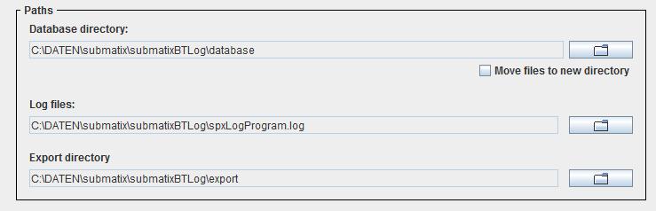
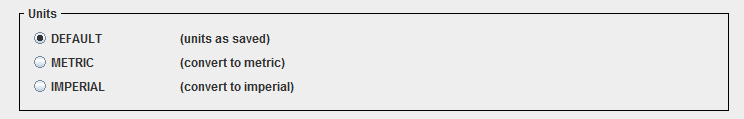

The options window
This window allows to set some of the program's basic options. It is only
available when operated in offline mode, that is being disconnected from the
SPX42.

The options window
The area 'Paths'

The area for paths
Here the directories used by the program to save files to are defined.
The file 'database directory' is the directory the internal database
(complete SQL database) saves its files to. All information for devices and
log files are saved here.
The directory 'Log files' is the directory where the program saves all
information that document its own operation to. Completeness of these
information is determined by the parameter
"--loglevel".
The 'Export directory' is the directory the program saves all files to
that were created by exporting using the file
manager
Contents
The 'units' part

The 'units' part
There are three possibilities.
1. DEFAULT
Units are displayed as saved on the SPX42.
2. METRIC
All units are displayed in metric system and are converted if necessary.
3. IMPERIAL
All units are displayed in imperial system and are converted if necessary.
Contents